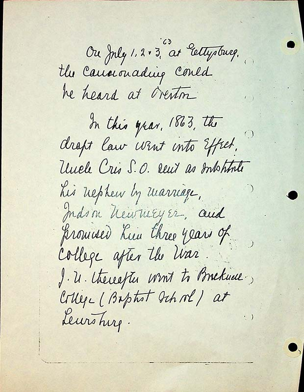

On July 1,2, & 3, ^’63 at Gettysburg, the cannonade could be heard at Overton.
In this year, 1863, the draft law went into effect.
Uncle Cris S.O sent as ?ubstitute his nephew by marriage, Judson Newmeyer, and promised him three years of college after the war.
J.U thereafter went to Bucknell College (Baptist School) at Lewsiburg.